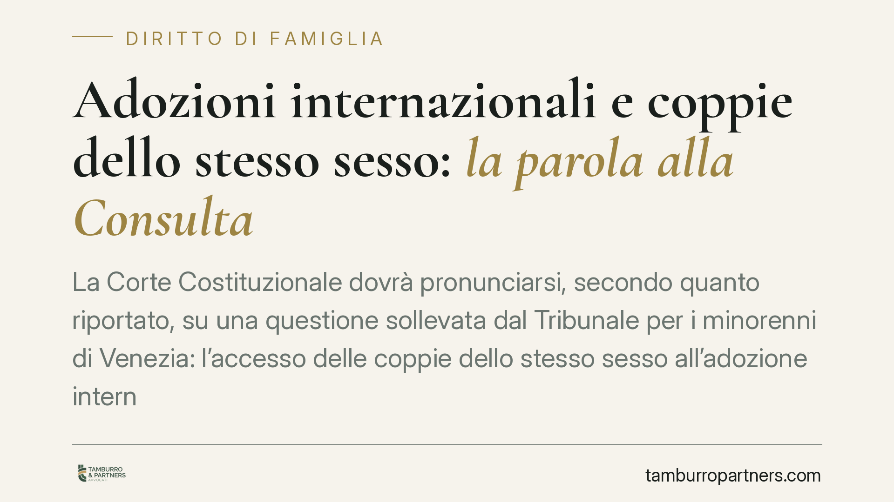

Adozioni internazionali e coppie dello stesso sesso: la parola alla Consulta
La Corte Costituzionale dovrà pronunciarsi, secondo quanto riportato, su una questione sollevata dal Tribunale per i minorenni di Venezia: l'accesso delle coppie dello stesso sesso all'adozione internazionale. Il tema tocca l'intreccio tra legge sull'adozione, disciplina delle unioni civili e vincoli internazionali, con ricadute concrete per molte famiglie.

Il caso
Secondo quanto riportato dalla stampa specializzata, il Tribunale per i minorenni di Venezia avrebbe rimesso alla Corte Costituzionale la questione relativa alla possibilità, per una coppia dello stesso sesso, di accedere all'adozione internazionale.
In attesa del deposito del provvedimento di rimessione, conviene muoversi con prudenza sui dettagli procedurali e concentrarsi sul quadro normativo, che è il vero terreno del contendere.
Inquadramento normativo
La legge di riferimento è la L. 184/1983 ("Diritto del minore ad una famiglia"). L'art. 6 individua i requisiti soggettivi per l'adozione cosiddetta "piena" o "legittimante": possono adottare i coniugi uniti in matrimonio da almeno tre anni. Il triennio può essere raggiunto anche computando l'eventuale periodo di convivenza stabile e continuativa che abbia preceduto il matrimonio. In altri termini, la convivenza prematrimoniale non è un titolo autonomo di accesso, ma concorre al calcolo del triennio una volta intervenuto il matrimonio.
Il nodo è il vincolo del matrimonio. La L. 76/2016 sulle unioni civili, all'art. 1, comma 20, stabilisce il principio di equiparazione tra unione civile e matrimonio ai fini dell'applicazione delle norme che richiamano i coniugi, ma fa espressamente salvo quanto previsto e consentito in materia di adozione dalle norme vigenti. È una clausola di non estensione: la disciplina adottiva resta ancorata al matrimonio.
Sul versante internazionale rilevano la Convenzione dell'Aja del 29 maggio 1993 sulla tutela dei minori e la cooperazione in materia di adozione internazionale, e la L. 476/1998 che l'ha ratificata e resa esecutiva in Italia. Queste fonti disciplinano la procedura attraverso enti autorizzati e la Commissione per le adozioni internazionali, e introducono un elemento spesso trascurato: la legislazione del Paese d'origine del minore. Anche superando l'ostacolo interno, l'adozione presuppone infatti che l'ordinamento di provenienza del bambino consenta l'adozione da parte della coppia richiedente.
Adozione piena e adozione in casi particolari
È utile distinguere due istituti diversi.
L'adozione piena (o legittimante) recide i legami con la famiglia d'origine e instaura un rapporto di filiazione a tutti gli effetti. È quella soggetta ai requisiti dell'art. 6 e al vincolo matrimoniale.
L'adozione in casi particolari, prevista dall'art. 44 L. 184/1983, ha portata più limitata e non recide i legami originari. La lett. d) della norma consente l'adozione nella "constatata impossibilità di affidamento preadottivo". Su questa disposizione la giurisprudenza ha costruito aperture significative in favore di configurazioni familiari diverse da quella fondata sul matrimonio. Si tratta però di uno strumento distinto dall'adozione internazionale piena, con effetti giuridici differenti.
Implicazioni pratiche
Per le coppie dello stesso sesso interessate a un percorso adottivo, la pronuncia attesa può incidere su un presupposto di accesso fino ad oggi precluso in via ordinaria. Allo stato, l'adozione internazionale piena presuppone il matrimonio, che per le coppie omosessuali non è previsto dall'ordinamento italiano.
Resta comunque fermo, anche in caso di apertura interna, il filtro della legislazione del Paese d'origine del minore, che molti Stati non consentono. È un dato che ridimensiona gli effetti pratici di un eventuale accoglimento.
I possibili esiti
La Corte dispone di diverse alternative.
Può rigettare la questione, ritenendo infondato il dubbio di legittimità e lasciando invariato il quadro attuale.
Può accogliere la questione, dichiarando l'illegittimità costituzionale delle norme nella parte in cui escludono le coppie dello stesso sesso.
Può infine dichiarare la questione inammissibile con monito al legislatore: una formula con cui la Corte rinvia la scelta al Parlamento, segnalando l'esigenza di un intervento normativo senza sostituirsi ad esso. È una tecnica ricorrente proprio su temi eticamente e politicamente sensibili.
Cosa fare in concreto
- Verificare preliminarmente i requisiti soggettivi previsti dalla normativa vigente prima di avviare qualsiasi pratica presso enti autorizzati.
- Informarsi sulla legislazione del Paese d'origine del minore, che può precludere l'adozione a prescindere dal diritto interno.
- Distinguere con chiarezza l'adozione piena dall'adozione in casi particolari ex art. 44, valutandone i diversi effetti.
- Attendere il deposito della pronuncia della Consulta prima di assumere decisioni definitive su percorsi adottivi internazionali.
- Conservare la documentazione relativa alla stabilità del rapporto di coppia, potenzialmente rilevante in prospettiva.
Uno sguardo prospettico
La decisione si inserisce in un percorso giurisprudenziale che negli ultimi anni ha progressivamente ridefinito i confini della genitorialità. L'esito, qualunque sia, non chiuderà il tema: il coordinamento tra diritto interno, unioni civili e vincoli internazionali resta un cantiere aperto, in cui il ruolo del legislatore appare difficilmente eludibile.
---
Contributo informativo a cura di Tamburro & Partners - Avv. Giuseppe Tamburro. Non costituisce parere legale.
Ogni famiglia ha il suo equilibrio.
Separazione, divorzio, affidamento, assegno: se vuoi un confronto riservato su una specifica situazione, scrivi allo studio. Ti rispondiamo entro un giorno lavorativo.